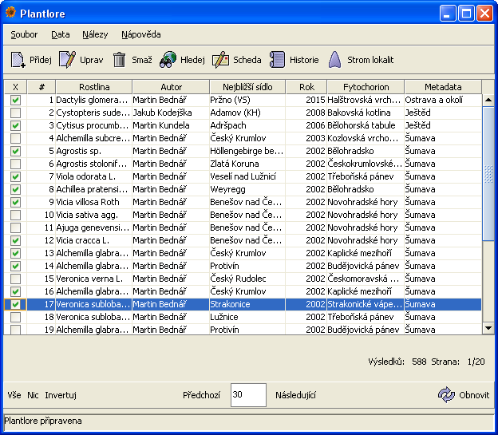
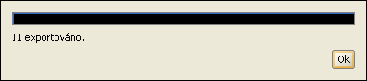

Vaše nálezová data jsou při práci s Plantlore ukládána do databáze. K databázi nelze přistupovat přímo a pokud byste chtěli svoje data přenášet i na jiné počítače, je potřeba použít Export. Export dat slouží k "vytažení" nálezových dat z databáze a uložení do souboru na disku Vašeho počítače.
Export lze provádět po připojení k jakékoli databázi - tedy i k databázi vzdálené. Tehdy se vyplatí zvážit přenosovou kapacitu linky, kterou používáte pro připojení, neboť se může přenášet velké množství dat a doba nutná k vyexportování nálezových dat by byla neúnosná.
Před vlastním exportem je nejprve nutné vybrat (označit) nálezové záznamy, které chcete exportovat. Pro zúžení okruhu, z něhož budete záznamy vybírat, slouží Vyhledávání. Ve vyhledávacím formuláři zadáte požadovaná kriteria a v Přehledu se zobrazí všechny relevantní záznamy uložené v databázi. Z těchto záznamů můžete ještě explicitně označit ty, které jsou pro vás důležité. Neoznačíte-li žádné záznamy, Plantlore se bude chovat, jako byste označili všechny; tím Vám usnadní práci s jejich označováním.
Na následujícím obrázku je označeno 11 záznamů z devatenácti.

Export probíhá ve dvou krocích.
Zvolte jméno souboru, do kterého se mají data uložit, a jeho formát. K dispozici je několik základních formátů:
Tento krok je volitelný a nabízí jej pouze formáty XML, CSV a StdOut. Zbylé formáty automaticky exportují záznam se všemi jeho atributy. Volba atributů (též sloupečků) nálezového záznamu se provádí označováním položek v zobrazeném stromě. Červeně jsou označeny položky, které je nutné vybrat, pokud budete chtít data znovu nahrát do Plantlore (více viz Import).
Nevyberete-li žádné sloupečky, předpokládá se, že jste označili všechny.

Po dokončení výběru atributů se spustí Export. Průběh procesu můžete sledovat v otevřeném okně. Rozhodnete-li se Export zrušit, stiskněte tlačítko Storno a export bude předčasně ukončen.

Exportovat lze jakákoli nálezová data, která jste označili a tedy máte právo je prohlížet. Pamatujte: nic znamená vše - neoznačíte-li explicitně žádné záznamy nebo sloupečky, Plantlore se chová, jako byste vybrali všechny. Současně může probíhat v jedné instanci programu Plantlore pouze jeden Export nálezových dat.